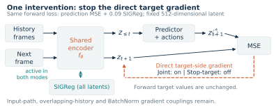
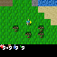
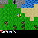
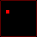

JOINT EMBEDDING PREDICTIVE WORLD MODELS · V2 IN PREPARATION
Testing where world models fail.
A separate revision built around prospective interventions.
Fresh Craftax evaluation is complete. Matched control, forecast readouts and target-gradient experiments will determine the final claims.
Research manuscript companionWorking revision · fresh evaluation includedRead the paper ↗
Joint-embedding world models learn to predict latent representations without reconstructing every pixel. This can discard irrelevant visual detail. LeWorldModel makes this approach trainable end to end with next-embedding prediction and Gaussian regularization. The unresolved question is whether the information that remains is sufficient for decisions, and whether imagined transitions preserve it.
We examine these questions separately. An exploratory Craftax experiment distinguishes nearby goal reaching from reward control. A controlled gate task reveals a gap between real-transition and imagined training, even when encoded observations retain useful information. Simpler nuisance worlds then test how background persistence and stochastic motion affect a fixed representation-learning recipe. The resulting evidence concerns these tested systems; it does not establish a general failure of JEPAs.
01 / COMPLEX WORLDCraftax
Local reachability versus reward control
02 / CONTROL DIAGNOSTICThe delayed gap
Retained observations versus imagined transitions
03 / CONTROLLED FACTORSNuisance cubes
Background persistence crossed with stochastic motion
PROSPECTIVE INTERVENTIONS / ANALYSIS PENDING
Change one link, then test what follows.
The revised experiments preserve the original 512-dimensional latent size. Matched gate control freezes the existing world models and replaces the source of transitions and reward/termination signals under one policy-training protocol. Forecast probes test whether a readout trained on real latents transfers to predicted latents, and whether a forecast-trained readout recovers what the original decoder misses.
A separate factorial compares joint prediction-target gradients with detached targets, under still and fresh-wind dynamics with gray frame noise. It keeps architecture, updates, initialization and random-key schedules matched. These are prospective tests; their outcomes have not yet been added to this working article.

Method diagram. Stop-gradient changes the direct prediction-target gradient. It does not introduce a teacher or freeze the encoder, and the shared encoder still receives gradients through prediction inputs and SIGReg. This diagram specifies the intervention, not a result. Diagram provenance ↗
THE QUESTION
Three requirements, three different tests.
A useful world model must preserve relevant state, predict how it changes, and provide signals from which a controller can learn. A representation probe measures the first requirement. A rollout measures the second. A real-environment policy evaluation tests the complete chain.
INSPECT THE LEARNING PIPELINE
xₜ → fθ → zₜEncode observations
Which state remains available?
→
z≤ₜ, a≤ₜ → gθ → ẑₜ₊₁Predict a latent future
Does the transition preserve it?
→
ẑ, r̂, d̂ → π → aLearn to act
Does it support real behavior?
Retention. Decoding a real observation’s frozen latent can reveal information that an imagined rollout later loses. A successful readout establishes availability under that readout; a failed readout does not prove absence.
Figure 1. The experiment separates representation, prediction and control. Reward and termination heads are fitted after freezing the JEPA. Their errors and the policy-training protocol remain competing explanations for failed control.
TRAINING OBJECTIVE
Here z is an encoded observation and ẑ is its predicted latent. Coordinate-mean squared prediction loss is combined with the Gaussian marginal regularizer introduced in LeJEPA. Gradients reach both prediction and target. No reconstruction or reward supervision enters JEPA world-model fitting.
COMPLETED FOLLOW-UP / CRAFTAX
Useful local control survives a stricter test.
One existing 512-dimensional JEPA checkpoint reaches 358 of 384 nearby target positions with a fixed six-action plan. It reaches 369 with observation feedback and replanning. Goals and execution use independent random draws; controllers share starts and execution randomness.
A no-op policy succeeds on 35.7% of all targets because those targets have the same position as the start. On the 247 targets that require displacement, JEPA planning succeeds on 89.9% without feedback and 93.9% with replanning, versus 7.7% for random actions. This is local action selection for a single fitted world model, not full-game Craftax performance.
ACTUAL START AND GOAL OBSERVATIONS
Six actions can change the target position.

Start · after seven warmup actions
→

Goal · after six generating actions
Real observations regenerated from saved evaluation seeds, with native environment colors. The examples are the first three episodes in evaluation batch 101 whose target displacement is at least two grid cells, selected without model outcomes. These are start and target frames, not predicted or executed JEPA trajectories. Selection and frame provenance ↗
ONE WORLD MODEL / THREE EVALUATION BATCHES
Position success after six real actions.
384 evaluation episodes · one trained checkpoint
Action selection
Reached
Success
95% interval
No-op
137 / 384
35.7%
31.0–40.6%
Uniform random
65 / 384
16.9%
13.5–21.0%
JEPA · fixed six-action plan
358 / 384
93.2%
90.3–95.3%
JEPA · receding-horizon plan
369 / 384
96.1%
93.7–97.6%
Generating-sequence replay
382 / 384
99.5%
98.1–99.9%
Success requires the exact final player position and survival through execution. Three evaluation batches contain 128 starts each; they are not three model fits. Wilson intervals describe episode variation conditional on this checkpoint. Replaying the goal-generating actions is a privileged reference, not an oracle: execution noise is fresh.
The positive result sets a boundary on the failure claim: this representation and predictor support local goal control beyond no-op under independent execution noise. It does not validate the historical reward-head pipeline or explain the gate results.
Evaluation protocol and per-batch evidence
Evaluation seeds are 101, 202 and 303; the trained checkpoint seed is 0. Each task starts from a reset observation followed by seven random warmup actions. Six further random actions generate a nearby target image. The learned planner uses terminal latent distance and the native 17 actions, with no reward head, decoder, or latent scaling in the planning cost.
The target start-to-goal Manhattan distances are 0, 1, 2 or 3 grid cells (137, 148, 84 and 15 tasks). Each CEM solve uses 512 candidates, 32 elites and six iterations. The fixed plan executes all six actions; receding-horizon planning re-encodes each real observation.
A white wall moves toward a red cube against a black background, without wind. Its gap can be at the top or bottom, but the gap is initially hidden. An agent waiting in the center learns the gap location too late to escape. Successful behavior retreats first, then moves toward the revealed gap.
Decoding frozen latents of real observations retains the wall. Decoding the JEPA’s predicted latents loses it. The viewer below shows the saved diagnostic frames under recorded actions. A flow sample provides a feasibility reference, with a different architecture and training objective.
RECORDED ACTIONS / SAVED MODEL ROLLOUTS
Follow the same future through four views.
Real future
Recorded actions
Encoded real future
Frozen encoder → decoder
JEPA imagination

Autoregressive prediction
Flow imagination
No flow frames saved in this seed’s diagnostic.
One sample / reference only
+8
Model seed 0 · stored context 1 of 16 · future step +2
Figure 2. Frames exported directly from the saved latent-check diagnostics, without recoloring the environment. All 16 saved contexts and three JEPA seeds are available. The full quantitative diagnostic uses 64 pre-reveal contexts selected to contain no terminal event in the context or recorded future. Flow frames are available in the seed-0 file only; its sampled gap need not match the recorded realization. Frame provenance and hashes ↗
Retained information is useful under at least one readout.
A convolutional policy acting on decoded frozen latents discovers the gate strategy in 2 of 9 runs, both using encoder seed 1. A policy with the same convolutional torso on true pixels discovers it in 2 of 3 runs. Decoder fitting introduces additional reconstruction supervision outside the world-model training budget.
The result establishes that at least one frozen encoder retains useful information under this readout and learning procedure. It does not establish that all encoders preserve every relevant state variable.
FINAL REAL-ENVIRONMENT EVALUATION
Control depends on the whole training pipeline.
256 real episodes per policy Discovery: final survival > 50%
Training environment / observation
Torso
Model fits
Policy runs
Walls ↑
Discoveries
JEPA imagination · learned transitions, rewards and terminations
Table 1. Means over final policy endpoints. Model fits and policy runs are distinct replication levels; repeated predictor variants share encoders. Real and imagined PPO share the MLP torso design but differ in collection, starts, budget and update organization. The real and imagined final evaluations use unpaired episodes. The comparison measures a pipeline deficit, not an isolated dynamics effect; averaging eight samples also requires more inference compute than drawing one. Flow sampling and mean-of-eight use the same 150 updates and 1,228,800 imagined transitions, with 12- and 60-minute caps respectively. The two flow checkpoint paths contain the same binary; all nine flow policies share that fitted world model.
Figure 3. Final walls passed per real episode. Dots are policy runs, separated by world-model fit; bars show within-cell means. Orig. denotes the original predictor, Draw a residual sample, and Mean8 eight averaged samples. No pooled standard error across policies is presented as world-model uncertainty. Plot records ↗
The gap is clear. Its cause is not yet isolated.
Across all three JEPA predictor variants, imagined training passes 0.27 walls per episode. Real-transition training on the same frozen encoders passes 0.94. Neither MLP group discovers the retreat-and-escape strategy. The true-pixel MLP control also fails to discover it, so a failed latent MLP policy cannot by itself establish that its encoder discarded the wall.
Reward and termination errors are a concrete alternative explanation. For encoder 0, the termination head’s AUC is 0.96 for border deaths but 0.65 for wall deaths. Mean predicted reward is −0.89 and −0.05 respectively, where the true terminal reward is −1.
03 / NUISANCE CUBES
Remove the wall. Vary what is predictable.
The simplest worlds cross two factors: a random gray background that persists for an episode or refreshes every frame, and controlled motion with or without hidden stochastic wind. This removes the gate strategy and asks a more basic question: how accurately can position be read from a real observation’s frozen latent?
FIXED 512-DIMENSIONAL GRID JEPA
Position readout error, in pixels.
Mean ± SD over 3 model seeds 500k transitions · 8,500 updates
Background
Still dynamics
Hidden wind
Fixed within episode
0.76± 0.07
0.67± 0.05
Fresh every frame
0.12± 0.01
21.33± 0.06
Table 2. Held-out real-latent position-readout L₁ error. Each cell uses three initialization/data-order seeds on one fixed 500,000-transition dataset, with the same grid architecture and update count. Background noise is gray. Shading identifies the larger measured error. The failed fresh-noise/wind cell also has high prediction loss, so it is not empirical evidence of a low-loss optimum that discards position. Full factorial audit ↗
Background persistence and motion stochasticity interact strongly in this recipe. The result is a failure of the tested learned representation and position readout under one condition. A failed readout does not prove that all position information is absent.
Survival is a weaker diagnostic in these simple worlds. A state-blind alternating policy can survive still dynamics, including the existing edge-start test. We therefore use position readout here rather than interpreting high survival as evidence of state-aware control.
WHAT THE OBJECTIVE GUARANTEES
Non-collapse does not specify what a representation is for.
A Gaussian marginal regularizer constrains the distribution of latent features. It does not require those features to encode controlled state. The population analysis makes this limitation precise, separately from the empirical failures.
Analytical illustration: prediction can improve while state becomes less available
ANALYTICAL ILLUSTRATION · NOT EXPERIMENTAL DATA
A noncollapsed latent can prefer static nuisance.
One-lag predictor · single-snapshot readout
Let sₜ be a stationary unit-Gaussian AR(1) state with correlation ρ, and let b be an unit-Gaussian nuisance independent of the entire state process that stays fixed within an episode. The scalar encoder mixes them:
zₜ = √α sₜ + √(1 − α) b
Optimal next-latent MSESingle-snapshot state R²
Prediction MSE0.438
Single-snapshot R²0.500
Across-episode variance1.000
Using only zₜ, the optimal predictor is c zₜ, where c = 1 − α + αρ. Its mean squared error is 1 − c². From only zₜ, the optimal current-state readout has R² = α, while Var(zₜ) = 1 across episodes for every mixture. Within a fixed episode, Var(zₜ | b) = α.
All curves follow from this Gaussian model; moving a slider changes no experiment. Lowering α makes next-latent prediction easier while reducing accessible current-state information, without collapsing the marginal. The predictor sees only the previous scalar latent: longer histories, actions and control performance are outside this illustration. The experiments use longer histories, so these curves are not predictions of their learning behavior. This illustrates the known static-nuisance shortcut studied by Sobal et al. (2022), rather than a new theorem.
01
Predictable nuisance can satisfy the objective.
Extending the static-nuisance construction of Sobal et al. (2022) to population SIGReg, an encoder can recover static nuisance, map it to a Gaussian marginal, and predict it perfectly while discarding controlled state. A controller restricted to these latents receives no state information.
The static-nuisance shortcut is prior work. The extension specifies Gaussian realizability and independence assumptions and proves equivalence to a randomized state-blind controller at deployment.
02
State retention can carry irreducible prediction cost.
When an encoder preserves state distances with a uniform lower bound, stochastic state innovations impose a positive squared prediction-loss floor. This is stronger than merely requiring injectivity or decodability.
(1/D) E ‖g − f(x′)‖² ≥ (κ²/D) E tr Σ
The displayed bound uses coordinate-mean MSE, matching the implemented loss; D is the latent dimension.
03
Decodable information can occupy arbitrarily small scale.
An exact Gaussian construction retains a binary state while making its latent separation arbitrarily small. Decodability therefore gives no fixed lower bound on that feature’s contribution to squared prediction loss.
Infinite-precision measurable construction. It does not establish robust finite-network decoding or explain deletion of a predictable wall.
These distinctions build on prior work. LeWorldModel already reports a gap between state probing and planning in TwoRoom, while Terver et al. discuss conditional-mean prediction under multimodal dynamics. Recent generative-world-model diagnostics likewise distinguish encoding, action conditioning and rollout failures. Our contribution is the controlled evidence across these tests under the stated recipe, together with the explicitly scoped population extensions.
The theoretical and empirical conclusions meet at a practical distinction: state retention, predictive fidelity and useful control require separate evidence.
INSPECT THE EVIDENCE
Policy repetitions are not independent world models.
The endpoint explorer keeps those levels visible. Each row is one final saved policy evaluated in 256 real episodes. It displays all 66 selected gate endpoints, including decoded-latent MLP controls not shown in the summary table. Filtering changes only the displayed rows.
Inspect the 66 historical policy endpoints
66 endpoints
Training / observation
Model
Policy
Walls ↑
Survival
Source
Exact final values and ledger SHA-256 hashes are preserved in evidence.json. No confidence interval across policy seeds is presented as uncertainty across independently fitted models.
Boundaries of the result
System contrast. Model supervision, fitted heads and PPO details differ across several comparisons. These results do not isolate one objective term.
Limited model replication. The central gate JEPA has three model seeds. Craftax and the flow reference have one reported fit each.
Exploratory evaluation. Architectures and diagnostics were developed while inspecting these tasks. A new independent test is required for a confirmatory claim.
Probes add supervision. Reconstruction decoders and reward/value/termination heads are fitted after the encoder is frozen and are outside its world-model budget.
REPRODUCIBILITY
From a claim to its source.
This working V2 includes the completed fresh Craftax evaluation. Historical results below are retained for comparison while prospective interventions are analyzed; no unfinished experiment is reported as completed. The local frames, endpoint data, styles and scripts load without external services.
The HTML design is a reading companion. The submission paper uses the official ICLR format; the visual theme does not replace its formatting requirements.